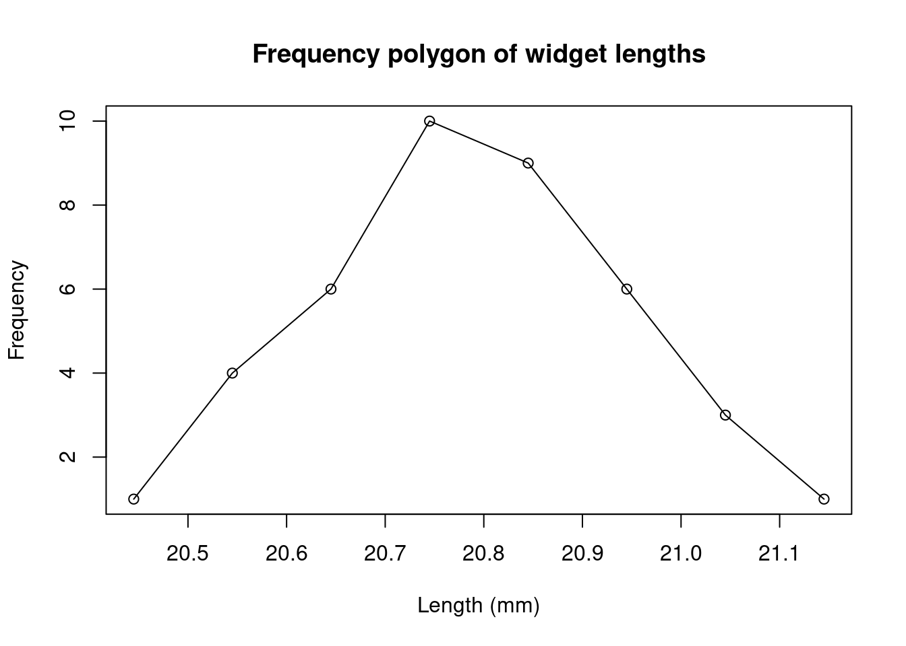
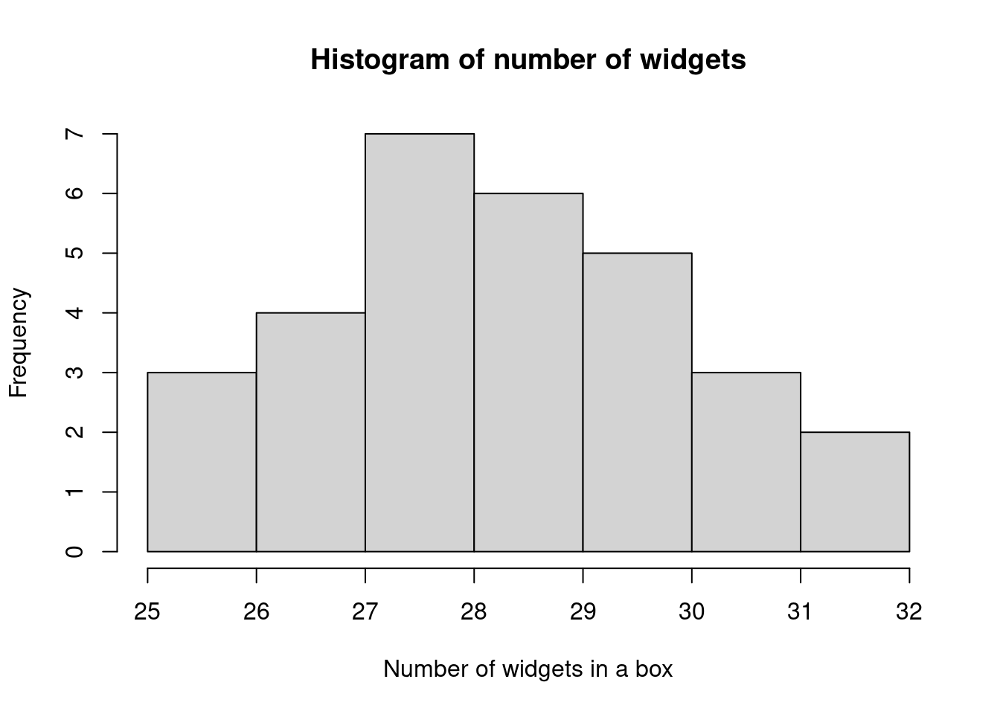
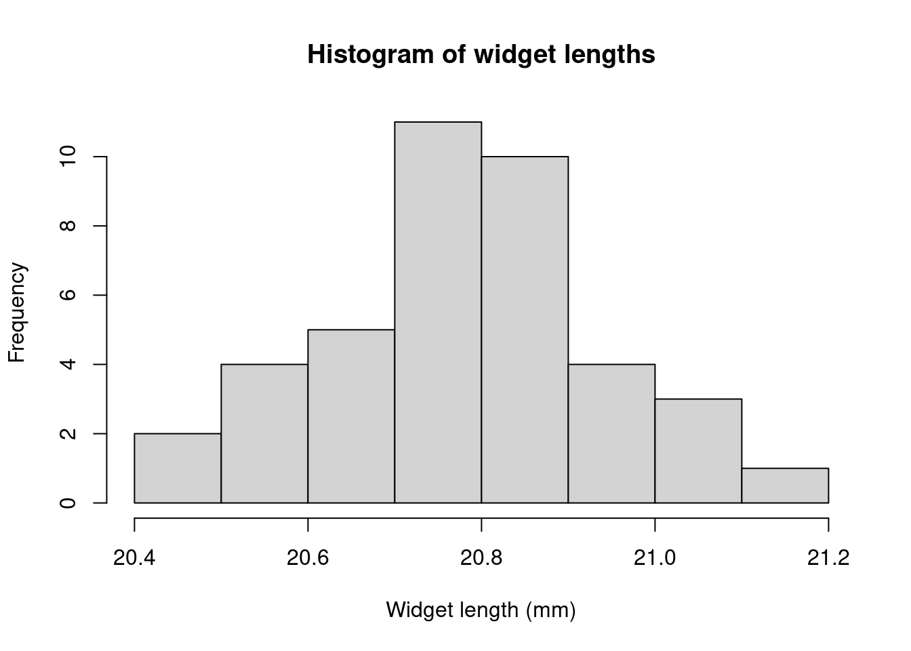
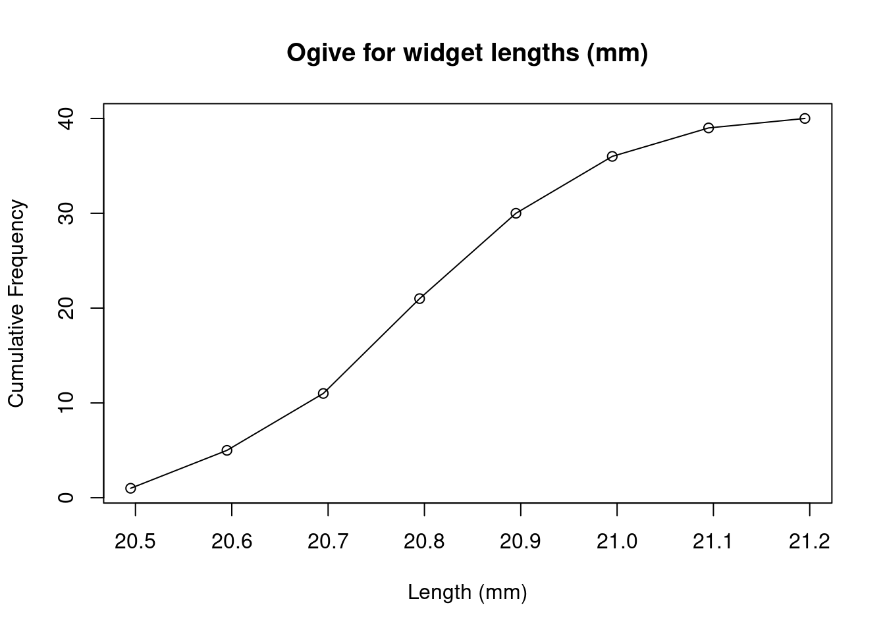
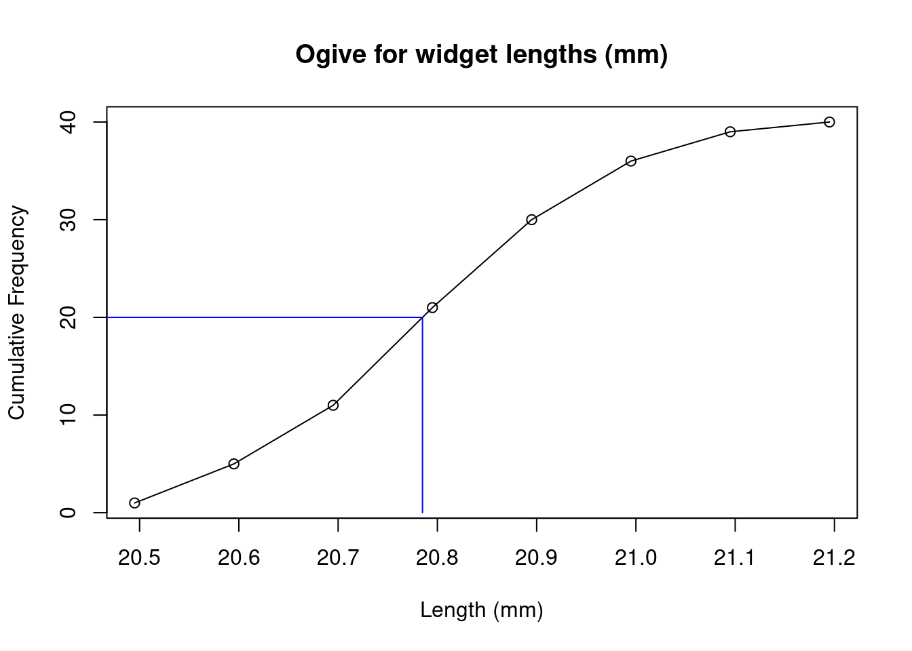
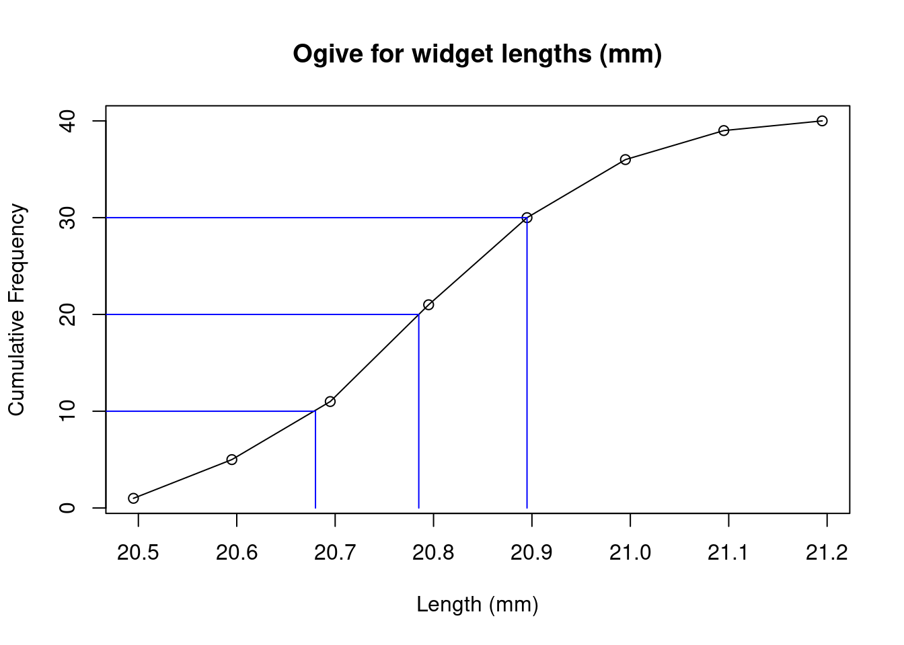
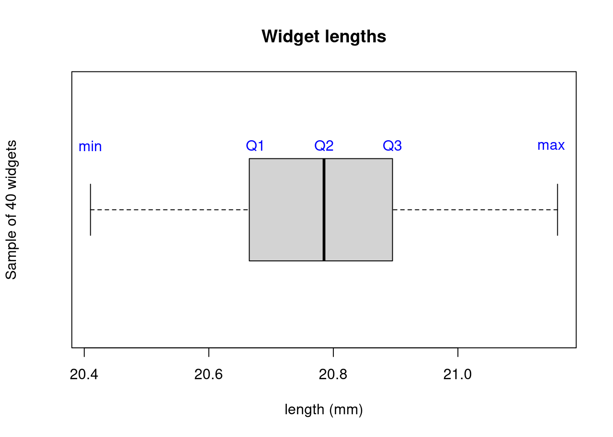

Chapter 23 Statistics
Statistics is the branch of mathematics that is primarily concerned with the collection, summarisation and interpretation of data. Data consist of sets of recorded observations or values. There are three broad types of data:
- Categorical. Observations that fit into qualitative categories, such as: film genres, rock types, renewable energy sources.
- Discrete. Observations that are from a finite or countable numerical range, such as: number of cars on a stretch of road, number of items produced in a factory.
- Continuous. Observations that can be from a continuum of numerical values, such as: a temperature measurement, mineral content of a rock sample. (Note that in reality such measurements may be restriced to discrete outcomes due to the limited precision of the recording instrument, but may still be modelled as continuous data.)
Here we only focus on the latter two. We usually analyse a limited (finite) sample of \(n\) observations and assume these are a good representitive of the population of all \(N\) possible observations.
23.1 Frequency
23.1.1 Tables
Consider the following values of the number of widgets packed into a sample of \(30\) boxes at a factory.
| 25 | 26 | 26 | 27 | 27 | 27 | 27 | 28 | 28 | 28 |
| 28 | 28 | 28 | 28 | 29 | 29 | 29 | 29 | 29 | 29 |
| 30 | 30 | 30 | 30 | 30 | 31 | 31 | 31 | 32 | 32 |
We label each of the observations \(x_1,\dotsc,x_{30}\), or more generally observations are labelled \(x_i\) where \(i=1,\dotsc,n\).
We can summarise this data in a frequency distribution, which shows the frequency \(f\) with which each unique value \(x\) occurs:
| Value \(x\) | Frequency \(f(x)\) |
|---|---|
| 25 | 1 |
| 26 | 2 |
| 27 | 4 |
| 28 | 7 |
| 29 | 6 |
| 30 | 5 |
| 31 | 3 |
| 32 | 2 |
Note that the sum of the frequency column is the number of samples \(n=30\), that is \(\sum_x f(x) = n\).
Sometimes it is more convenient to group the values into classes, particularly with continuous variables. For example, if the lengths of a sample of \(40\) widgets (in mm) are
| 20.90 | 20.57 | 20.86 | 20.74 | 20.82 | 20.63 | 20.53 | 20.89 | 20.75 | 20.65 |
| 20.71 | 21.03 | 20.72 | 20.41 | 20.94 | 20.75 | 20.79 | 20.65 | 21.08 | 20.89 |
| 20.50 | 20.88 | 20.97 | 20.78 | 20.61 | 20.92 | 21.07 | 21.16 | 20.80 | 20.77 |
| 20.82 | 20.72 | 20.60 | 20.90 | 20.86 | 20.68 | 20.75 | 20.88 | 20.56 | 20.94 |
we could group these into classes of width 0.10
| Class | Frequency \(f\) |
|---|---|
| 20.40-20.49 | 1 |
| 20.50-20.59 | 4 |
| 20.60-20.69 | 6 |
| 20.70-20.79 | 10 |
| 20.80-20.89 | 9 |
| 20.90-20.99 | 6 |
| 21.00-21.09 | 3 |
| 21.10-21.19 | 1 |
The Groups listed here are denoted by the upper and lower class limits. Due to rounding, the values counted in each group are between the class boundaries, for example the lower and upper class boundaries of 20.40-20.49 are 20.395-20.495 (note that a value equal to the upper class boundary would be rounded-up into the next class). Sometimes groups are instead listed similar to \(a\le x <b\), in which case the class limits coincide with the class boundaries.
We could add a further column to express the relative frequency, which is \(f/n\) where \(n\) is the number of observations. This is often expressed as a percentage (i.e. multiply the fraction by 100).
| Class | Frequency \(f\) | Relative Frequency (%) |
|---|---|---|
| 20.40-20.49 | 1 | 2.5 |
| 20.50-20.59 | 4 | 10.0 |
| 20.60-20.69 | 6 | 15.0 |
| 20.70-20.79 | 10 | 25.0 |
| 20.80-20.89 | 9 | 22.5 |
| 20.90-20.99 | 6 | 15.0 |
| 21.00-21.09 | 3 | 7.5 |
| 21.10-21.19 | 1 | 2.5 |
It can also be useful to tabulate the cumulative frequency (the “running total”), which adds the frequencies of the current value/class and all previous values/classes. For our examples, this would give
| Value \(x\) | Frequency \(f\) | Relative Frequency (%) | Cumulative Frequency | Relative Cumulative Frequency (%) |
|---|---|---|---|---|
| 25 | 1 | 3.33 | 1 | 3.33 |
| 26 | 2 | 6.66 | 3 | 10.00 |
| 27 | 4 | 13.33 | 7 | 23.33 |
| 28 | 7 | 20.00 | 14 | 46.66 |
| 29 | 6 | 16.66 | 20 | 66.66 |
| 30 | 5 | 10.00 | 25 | 83.33 |
| 31 | 3 | 10.00 | 28 | 93.33 |
| 32 | 2 | 6.66 | 30 | 100.00 |
| Class | Frequency \(f\) | Relative Frequency (%) | Cumulative Frequency | Relative Cumulative Frequency (%) |
|---|---|---|---|---|
| 20.40-20.49 | 1 | 2.5 | 1 | 2.5 |
| 20.50-20.59 | 4 | 10 | 5 | 12.5 |
| 20.60-20.69 | 6 | 15 | 11 | 27.5 |
| 20.70-20.79 | 10 | 25 | 21 | 52.5 |
| 20.80-20.89 | 9 | 22.5 | 30 | 75 |
| 20.90-20.99 | 6 | 15 | 36 | 90 |
| 21.00-21.09 | 3 | 7.5 | 39 | 97.5 |
| 21.10-21.19 | 1 | 2.5 | 40 | 100 |
23.1.2 Graphs
It is useful to summarise the data distribution graphically, since this can quickly reveal trends.
Three types of graphs commonly used to present data in the frequency distribution: * Frequency Polygon * Histogram * Ogive
A frequency polygon is a line graph with frequency plotted against the class midpoints. The points are connected by straight lines.

A histogram is a graphical representation of a frequency table, in which vertical rectangular blocks are drawn so that:
- the centre of the base indicates the central value of the class and
- the area of the rectangle represents the class frequency.
If the class intervals are regular, the frequency is then denoted by the height of the rectangle.


Here we have labelled the classes using the class boundaries; an alternative is to label the class midpoints in the middle of each rectangle. Similar plots can be made using the relative frequency. This will have the same shape, but the “\(y\)-axis” will now be in units of the relative frequency, between 0 and 1, or 0% and 100%.
The ogive is a plot of the cumulative frequency against the upper class boundaries. Connecting the points with straight lines allows us to interpolate between the values.

23.2 Measures of central tendency
We will consider three measures of central tendancy: these are single values that summarise data by their “averages”.
23.2.1 Mean
The mean of the population is defined as
\[\mu = \frac{1}{N}\sum_{i=1}^N x_i.\]
The mean of a sample of \(n\) observations with values \(x_i\) is defined as
\[\bar{x}=\frac{1}{n}\sum_{i=1}^n x_i.\]
If we have a frequency table, then we can find the mean as the sum over the distinct values of \(x\) multiplied by \(f\)
\[\bar{x}=\frac{1}{n}\sum_x x f\]
If we add a third column \(xf\) to our frequency table for the number of widgets in boxes, then \(\bar{x}\) is just the sum of the final column.
| Value \(x\) | Frequency \(f\) | \(xf\) |
|---|---|---|
| 25 | 1 | 25 |
| 26 | 2 | 52 |
| 27 | 4 | 108 |
| 28 | 7 | 196 |
| 29 | 6 | 174 |
| 30 | 5 | 150 |
| 31 | 3 | 93 |
| 32 | 2 | 64 |
we have \(\sum xf = 862\) hence \(\bar{x}=862/30=28.73\).
If we have grouped data, then we get a good approximation by taking \(x\) as the midpoint of the class. In our example of widget lengths, we have
| Class | midpoint \(x\) | Frequency \(f\) | \(xf\) |
|---|---|---|---|
| 20.40-20.49 | 20.445 | 1 | 20.445 |
| 20.50-20.59 | 20.545 | 4 | 82.18 |
| 20.60-20.69 | 20.645 | 6 | 123.87 |
| 20.70-20.79 | 20.745 | 10 | 207.45 |
| 20.80-20.89 | 20.845 | 9 | 187.605 |
| 20.90-20.99 | 20.945 | 6 | 125.67 |
| 21.00-21.09 | 21.045 | 3 | 63.135 |
| 21.10-21.19 | 21.145 | 1 | 21.145 |
then \(\bar{x}=\frac{1}{n}\sum xf = 831.5/40=20.79\).
23.2.2 Mode
The mode is the value with the greatest frequency. For example, in the values \(2,3,3,4,4,4,5,5\) the mode is \(4\). Note there could be more than one mode, as there are in the values \(1,1,2,2,3,4\). We can easily read the mode from a frequency table or histogram as the value (or multiple values) with the largest frequency. In the number of widgets frequency table the mode is 28.
If we have grouped data, then we define the modal class (or classes) as the class with the largest frequency. In the widget length frequency table the modal class is 20.70-20.79.
23.2.3 Median
The median is the value of the middle term when all observations are arranged in ascending or descending order. If we have an even number of observations then we take the mean of the two middle values. For our numbers of widgets example
| 25 | 26 | 26 | 27 | 27 | 27 | 27 | 28 | 28 | 28 |
| 28 | 28 | 28 | 28 | 29 | 29 | 29 | 29 | 29 | 29 |
| 30 | 30 | 30 | 30 | 30 | 31 | 31 | 31 | 32 | 32 |
we have 30 observations, so we take the average of the 15th and 16th values: \((29+29)/2=29\)
For grouped data, the median class can be found as the class where the middle value lies. In our widget length example, this is where the 20th and 21st values lie, which is in the class 20.70-20.79. We can further interpolate to find an estimate for the median. The classes before the median class contain \(6+4+1=11\) of the observations and the median class contains 10 observations. The median value therefore lies between the 9th and 10th observation in the median class. We assume the 10 observations are evenly distributed through this class. We divide the class width of 0.1 in the ratio 9:1. Then the median is
\[\text{median}\approx 20.70 + \frac{9}{10}\times 0.1= 20.79.\]
As a general formula we have:
\[\text{median}\approx\text{lower class boundary}+\frac{\frac{n}{2}-c_f}{f}\times w\]
where \(n\) is the total number of observations, \(c_f\) is the cumulative frequency before the median class, \(f\) is the frequency of the median class and \(w\) is the class width. For our example:
\[\text{median}\approx 20.70+\frac{\frac{40}{2}-(6+4+1)}{10}\times 0.1=20.79.\]
The median can also be read from the ogive plot, by finding the value corresponding to half the observations: draw a horizontal line from \(n/2=20\) to the ogive line, then vertically to the \(x\)-axis to read off the median.

23.3 Measures of Dispersion
The mean, mode and median all give us useful information about the central values of the observations, but they do not say anything about the spread, or dispersion, of the observations. Consider the following two sets of observations
\[26, 27, 28, 29, 30\] \[5, 19, 20, 36, 60\]
These both have a mean of \(28\), but the spread of the second set is clearly wider than the spread of the first set. It is useful to have a measure that captures this.
23.3.1 Range
The range is simply the difference between the highest and lowest values in the data. In our number of widgets example, this is \(32-25=7\). However, this does not give any indication about the general spread of the data, it only tells us about the extreme values at either end.
23.3.2 Interquartile Range and Percentiles
The quartiles are the values that split the cumulative data into quarters.
- Lower Quartile (\(Q_1\)): 25% of the data falls before \(Q_1\)
- Middle Quartile = Median (\(Q_2\)): 50% of the data falls before \(Q_2\)
- Upper Quartile (\(Q_3\)): 75% of the data falls before \(Q_3\)
These can be estimated from the ogive plot by drawing horizontal lines from the 25%, 50% and 75% values on the vertical axis to the ogive curve, and dropping vertical lines to the horizontal axis. In our widget length example, we have:

with the estimates \(Q_1\approx 20.68\), \(Q_2\approx 20.79\), \(Q_3\approx 20.895\).
The interquartile range is defined as \[IQR=Q_3-Q_1\] and is a measure of the spread of the data. For our widget lengths we have \(IQR\approx 20.895-20.68=0.215\).
A related plot is the box plot, which includes \(Q_1\), \(Q_2\) (median), \(Q_3\) and the extreme values. 
More generally, we define the \(k^\text{th}\) percentile \(P_k\) as the value for which \(k\)% of the data falls before \(P_k\). For example, the \(25^{\text{th}}\) percentile is \(P_{25}=Q_1\).
23.3.3 Variance and Standard Deviation
The variance is the average of the squared deviations from the mean. This tells us how tightly the data is clustered around the mean. If we had observations of the entire population, this is defined as \[\sigma^2=\frac{1}{N} \sum_{i=1}^N (x_i - \mu)^2\] but if we only have a sample of \(n<N\) observations, we use \[S^2=\frac{1}{n-1} \sum_{i=1}^n (x_i - \bar{x})^2\] Why do we divide by \(n-1\) and not \(n\)? This gives a more accurate estimate of the population variance (see this wikipedia article for more details).
As the units of variance are the squared units of the data, it is usually more useful to take the square root to obtain a measure with the same units as the data. This is called the standard deviation:
\[S=\sqrt{S^2}=\sqrt{\frac{1}{n-1} \sum_{i=1}^n (x_i - \bar{x})^2}.\]
We can find \(S\) in a convenient way by tabulating the values in the sum. For our second data set above we have \(\bar{x}=\frac{1}{n}\sum_{i=1}^nx_i=140/5=28\). Then,
| \(x_i\) | \(x_i-\bar{x}\) | \((x_i-\bar{x})^2\) |
|---|---|---|
| 5 | -23 | 529 |
| 19 | -9 | 81 |
| 20 | -8 | 64 |
| 36 | 8 | 64 |
| 60 | 32 | 1024 |
| \(\sum_{i=1}^nx_i=140\) | \(\sum_{i=1}^n (x_i - \bar{x})^2=1762\) |
Then we have
\[S=\sqrt{\frac{1}{5-1}(1762)}=\sqrt{440.5}=20.99.\]
An alternative formula for the sample variance is
\[S^2=\frac{\sum_{i=1}^nx_i^2-(\sum_{i=1}^nx_i)^2/n}{n-1}\]
which is usually easier to work with since it needs less calculations. We can find this using the table
| \(x_i\) | \(x_i^2\) |
|---|---|
| 5 | 25 |
| 19 | 361 |
| 20 | 400 |
| 36 | 1296 |
| 60 | 3600 |
| \(\sum_{i=1}^nx_i=140\) | \(\sum_{i=1}^n x_i^2=5682\) |
giving
\[S=\sqrt{\frac{5682-140^2/5}{5-1}}=\sqrt{440.5}=20.99.\]
For grouped data, we perform these calculations using the midpoint of each class as the value of \(x\). The standard deviation is estimated by \[S=\sqrt{S^2}=\sqrt{\frac{1}{n-1} \sum_{x} f(x - \bar{x})^2}\] For example, constructing the table for our widget lengths
| midpoint \(x\) | Frequency \(f\) | \(xf\) | \((x-\bar{x})\) | \(f(x-\bar{x})^2\) |
|---|---|---|---|---|
| 20.45 | 1 | 20.45 | -0.34 | 0.12 |
| 20.55 | 4 | 82.20 | -0.24 | 0.24 |
| 20.65 | 6 | 123.90 | -0.14 | 0.12 |
| 20.75 | 10 | 207.50 | -0.04 | 0.02 |
| 20.85 | 9 | 187.65 | 0.06 | 0.03 |
| 20.95 | 6 | 125.70 | 0.16 | 0.15 |
| 21.05 | 3 | 63.15 | 0.26 | 0.20 |
| 21.15 | 1 | 21.15 | 0.36 | 0.13 |
| \(n=\sum f = 40\) | \(\sum_{x} xf=831.7\) | \(\sum_x f(x-\bar{x})^2=0.99775\) |
Note \(\bar{x}=831.7/40=20.79\). Hence \[S=\sqrt{\frac{1}{40-1}\times 0.99775}=0.16\] Alternatively we use \[S=\sqrt{\frac{\sum_{x} (x^2)f-(\sum_{x}xf)^2/n}{n-1}}.\] For our example, we construct the table
| midpoint \(x\) | Frequency \(f\) | \(xf\) | \(x^2f\) |
|---|---|---|---|
| 20.45 | 1 | 20.45 | 418.20 |
| 20.55 | 4 | 82.2 | 1689.21 |
| 20.65 | 6 | 123.9 | 2558.54 |
| 20.75 | 10 | 207.5 | 4305.63 |
| 20.85 | 9 | 187.65 | 3912.50 |
| 20.95 | 6 | 125.7 | 2633.42 |
| 21.05 | 3 | 63.15 | 1329.31 |
| 21.15 | 1 | 21.15 | 447.32 |
| \(n=\sum f=40\) | \(\sum_{x} xf=831.7\) | \(\sum_{x} (x^2)f=17294.12\) |
Hence \[S=\sqrt{\frac{17294.12-831.7^2/40}{40-1}}=0.16.\]